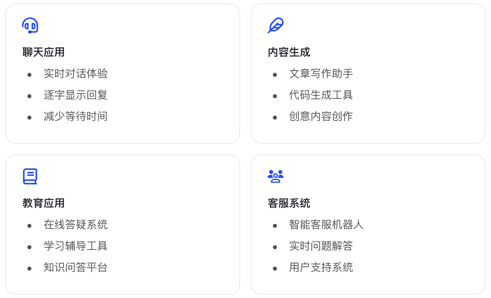

流式消息¶
当我们在网页或 App 里和大模型对话时，如果必须等模型把整段回答全部生成完再显示，用户会感觉界面卡住了。尤其是生成长文章、分析报告、代码或深度推理结果时，等待时间可能会比较明显，体验就会变得不够自然。
流式消息（Streaming）解决的正是这个问题：模型一边生成，应用一边接收并展示内容。用户看到文字逐步出现，就像正在实时打字一样，不需要等到完整答案生成完毕才看到结果。对入门者来说，可以把它理解为“边生成、边返回、边展示”。
流式输出的重要性不只是让界面看起来更快，它还会影响产品体验和系统设计。通过流式返回，应用可以更早给用户反馈，也可以在接收过程中做中断、拼接、日志记录、进度展示等处理。因此，只要你的应用面向真实用户，尤其涉及长文本生成或对话式交互，流式消息通常都是必须掌握的基础能力。
功能特性¶
流式消息采用增量生成机制，在生成过程中将内容分块实时传输，而非等待完整响应生成后一次性返回。这种机制使得开发者可以：
- 实时响应 ：无需等待完整响应，内容逐步显示
- 改善体验 ：减少用户等待时间，提供即时反馈
- 降低延迟 ：内容生成即传输，减少感知延迟
- 灵活处理 ：可以在接收过程中进行实时处理和展示
核心参数说明¶
stream=True: 启用流式输出，必须设置为Truemodel: 支持流式输出的模型
响应格式说明¶
流式响应采用服务器发送事件（Server-Sent Events, SSE）格式，每个事件包含：
choices[0].delta.content: 增量文本内容choices[0].delta.reasoning_content: 增量思考内容choices[0].finish_reason: 完成原因（仅在最后一个chunk中出现）usage: 令牌使用统计（仅在最后一个chunk中出现）
代码示例¶
- cURL
curl --location 'https://open.bigmodel.cn/api/paas/v4/chat/completions' \
--header 'Authorization: Bearer YOUR_API_KEY' \
--header 'Content-Type: application/json' \
--data '{
"model": "glm-5.2",
"messages": [
{
"role": "user",
"content": "写一首关于春天的诗"
}
],
"stream": true
}'
- Python
安装 SDK
验证安装
完整示例
from zai import ZhipuAiClient
# 初始化客户端
client = ZhipuAiClient(api_key='YOUR_API_KEY')
# 创建流式消息请求
response = client.chat.completions.create(
model="glm-5.2",
messages=[
{"role": "user", "content": "写一首关于春天的诗"}
],
stream=True # 启用流式输出
)
# 处理流式响应
full_content = ""
for chunk in response:
if not chunk.choices:
continue
delta = chunk.choices[0].delta
# 处理增量内容
if hasattr(delta, 'content') and delta.content:
full_content += delta.content
print(delta.content, end="", flush=True)
# 检查是否完成
if chunk.choices[0].finish_reason:
print(f"\n\n完成原因: {chunk.choices[0].finish_reason}")
if hasattr(chunk, 'usage') and chunk.usage:
print(f"令牌使用: 输入 {chunk.usage.prompt_tokens}, 输出 {chunk.usage.completion_tokens}")
print(f"\n\n完整内容:\n{full_content}")
响应示例¶
流式响应的格式如下：
data: {"id":"1","created":1677652288,"model":"glm-5.2","choices":[{"index":0,"delta":{"content":"春"},"finish_reason":null}]}
data: {"id":"1","created":1677652288,"model":"glm-5.2","choices":[{"index":0,"delta":{"content":"天"},"finish_reason":null}]}
data: {"id":"1","created":1677652288,"model":"glm-5.2","choices":[{"index":0,"delta":{"content":"来"},"finish_reason":null}]}
...
data: {"id":"1","created":1677652288,"model":"glm-5.2","choices":[{"index":0,"finish_reason":"stop","delta":{"role":"assistant","content":""}}],"usage":{"prompt_tokens":8,"completion_tokens":262,"total_tokens":270,"prompt_tokens_details":{"cached_tokens":0}}}
data: [DONE]
应用场景¶
